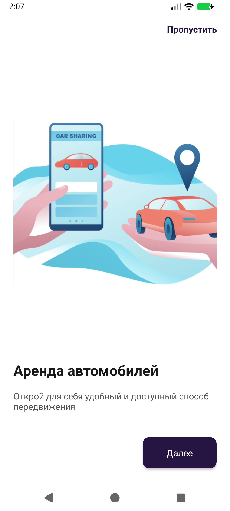
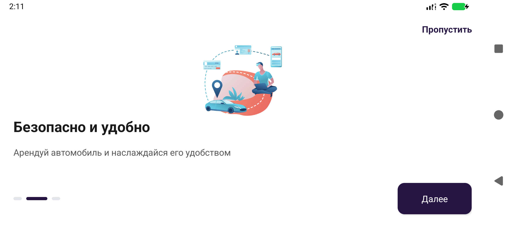

Конспект для защиты: файлы, функции, сценарии работы и ответы на контрольные вопросы
Проект: нативное Android-приложение на Kotlin.
Основа задания: страницы 51–59 методических указаний.
3 ноября 2026 года
Лабораторная № 1 охватывает старт приложения: загрузку, отсутствие интернета и приветствие пользователя. В проекте есть одна MainActivity. Она меняет разметку в зависимости от состояния Screen. Три слайда приветствия показаны через ViewPager2; каждый слайд — Fragment.
При первом запуске после загрузки открывается приветствие. После кнопки «Пропустить» или «Поехали» сохраняется флаг завершения, и следующий запуск ведёт к экрану входа. Сам вход — только точка перехода: авторизация и Supabase входят в следующие работы.
| Часть | Файлы | Роль |
|---|---|---|
| Представление | MainActivity, OnboardingPageFragment, OnboardingAdapter, XML-разметка | Показывает экраны и передаёт действия пользователя. |
| Состояние интерфейса | StartupViewModel | Выбирает следующий экран, помнит текущий слайд и прерванный сценарий. |
| Локальные данные | OnboardingRepository | Читает и сохраняет флаг прохождения приветствия. |
| Состояние сети | NetworkChecker и ConnectivityManager | Проверяет активную сеть и подтверждённый доступ в интернет. |
MainActivity наследуется от FragmentActivity, потому что страницы ViewPager2 реализованы как Fragment. Это стартовая Activity, объявленная в манифесте.
model — экземпляр StartupViewModel, источник текущего состояния экрана.connectivityManager — системный сервис, присылающий события о сети.handler — выполняет отложенную задачу в основном потоке интерфейса.displayedScreen — запоминает уже нарисованный экран, чтобы render() не пересоздавал его без необходимости.networkCallback — ссылка на подписку на изменения сети; нужна для корректной отмены подписки.splashTask — задача, которая по истечении времени проверяет интернет, завершает загрузку в ViewModel и обновляет экран.onCreate(savedInstanceState)
Вызывает installSplashScreen() до super.onCreate(), создаёт ViewModel через Factory, получает ConnectivityManager, рисует текущий экран. Если ещё идёт загрузка, планирует splashTask на оставшееся время. Время берётся из ViewModel, поэтому поворот устройства не начинает отсчёт заново.
onStart()
Регистрирует NetworkCallback. Его методы onLost, onAvailable и onCapabilitiesChanged вызывают refreshNetwork(). Затем сразу выполняется текущая проверка сети: приложению не нужно ждать следующего события системы.
onStop()
Отменяет регистрацию callback. Это предотвращает ненужную работу и удержание Activity после ухода приложения с экрана.
onDestroy()
Удаляет запланированную splashTask из очереди Handler. Старая Activity не должна обновлять интерфейс после уничтожения, например при повороте.
refreshNetwork()
Переходит в UI-поток через runOnUiThread, вызывает NetworkChecker.hasInternet(), передаёт результат в ViewModel и вызывает render(). Сетевой callback может прийти не из главного потока, а изменять View разрешено только в главном.
render()
Сравнивает displayedScreen и model.screen. Если экран уже показан, ничего не пересоздаёт. Иначе выбирает XML-разметку по Screen: загрузка, отсутствие сети, приветствие или вход. На экране ошибки сразу назначает обработчик кнопке «Повторить попытку».
showOnboarding()
Создаёт экран приветствия: ставит OnboardingAdapter в ViewPager2, восстанавливает номер слайда из ViewModel, подключает кнопки и обработчик смены страницы. «Далее» листает вперёд, на последнем слайде вызывает completeOnboarding(); «Пропустить» вызывает его сразу.
updatePage(position), локальная функция внутри showOnboarding()
Запоминает выбранный слайд, меняет подпись кнопки «Далее» на «Поехали» на третьем слайде и заново строит три индикатора. Активный индикатор шире и окрашен в фиолетовый цвет.
completeOnboarding()
Сообщает ViewModel о завершении приветствия и вызывает render(). Сохранение флага выполняет Repository через ViewModel, а Activity занимается только интерфейсом.
dp(value)
Переводит размер из dp в пиксели текущего экрана. Это нужно для индикаторов, созданных в коде, чтобы их физический размер был сопоставим на устройствах с разной плотностью пикселей.
ViewModel переживает поворот Activity. Поэтому в ней находятся экран, номер текущего слайда и промежуточное состояние переходов. Screen — перечисление из четырёх значений: SPLASH, OFFLINE, ONBOARDING, ENTRY.
screen — какой экран показывать сейчас. Изменить его извне нельзя: у свойства private set.onboardingPage — номер текущего слайда, от 0 до 2.onboardingFinished — флаг из Repository. Он показывает, видел ли пользователь приветствие.splashStartedAt — момент старта по монотонным часам SystemClock.elapsedRealtime(). Они не зависят от изменения системного времени.interruptedScreen — экран, который был открыт до исчезновения интернета. Нужен для правильного возврата.remainingSplashMillis()
Вычисляет остаток от 2500 мс и ограничивает его снизу нулём через coerceAtLeast(0L). Так экран загрузки не начинает отсчёт заново после поворота и не получает отрицательную задержку.
finishSplash(hasInternet)
Работает только если текущее состояние — SPLASH. Выбирает целевой экран: приветствие при первом запуске, иначе вход. Если сети нет, показывает OFFLINE и запоминает выбранную цель для возврата.
onNetworkChanged(hasInternet)
Во время загрузки ничего не меняет. Если интернет пропал, запоминает текущий экран и переключает на OFFLINE. Если интернет появился, возвращает прерванный экран; если он неизвестен, выбирает приветствие или вход по сохранённому флагу.
completeOnboarding()
Вызывает onboardingRepository.markFinished(), обновляет флаг в памяти, переходит на ENTRY и очищает прежнее прерванное состояние. Одинаково используется кнопками «Пропустить» и «Поехали».
Factory.create(modelClass)
Создаёт ViewModel с зависимостью OnboardingRepository. Обычный конструктор ViewModel без параметров не смог бы получить Repository. Проверка require не даёт случайно создать через эту фабрику другой тип ViewModel.
Класс работает с SharedPreferences с именем drive_next. Используется applicationContext, чтобы Repository не удерживал ссылку на конкретную Activity.
isFinished()
Читает ключ onboarding_finished. Если ключа ещё нет, возвращает false; значит, после новой установки будет показано приветствие.
markFinished()
Записывает true по тому же ключу. apply() применяет изменение в памяти сразу, а запись на диск выполняет без блокировки интерфейса.
hasInternet(context)
Получает системный ConnectivityManager, затем активную сеть и её NetworkCapabilities. Если сети или характеристик нет, возвращает false. Требует сразу две возможности: NET_CAPABILITY_INTERNET означает, что сеть заявляет доступ в интернет; NET_CAPABILITY_VALIDATED означает, что Android подтвердил этот доступ. Это точнее, чем проверка только включённого Wi-Fi.
Это наследник FragmentStateAdapter, который связывает ViewPager2 с фрагментами.
getItemCount()
Возвращает 3 — количество слайдов. ViewPager2 использует это число для границ перелистывания.
createFragment(position)
Создаёт фрагмент для заданного индекса через OnboardingPageFragment.create(position). ViewPager2 может пересоздать страницу по мере необходимости.
onCreateView(inflater, container, state)
Создаёт View фрагмента из page_onboarding.xml. Этот XML общий для всех трёх слайдов.
onViewCreated(view, state)
Берёт номер страницы из arguments, ограничивает его диапазоном 0…2 через coerceIn, находит ImageView и два TextView. Затем подставляет соответствующие изображение, заголовок, описание и текст для доступности изображения.
create(page)
Фабричный метод создаёт Fragment и кладёт номер страницы в Bundle. Аргументы Bundle нужны, чтобы Android мог восстановить страницу после пересоздания фрагмента.
Массивы IMAGES, TITLES, DESCRIPTIONS и IMAGE_DESCRIPTIONS хранят идентификаторы ресурсов по одному индексу на каждый слайд. Тексты находятся в strings.xml, а не зашиты в Kotlin.
INTERNET разрешает сетевые запросы; ACCESS_NETWORK_STATE разрешает получать состояние сети.android:exported="true" делает стартовую Activity доступной для запуска системой.MAIN + LAUNCHER определяет точку входа из списка приложений.Theme.DriveNext.Splash.allowBackup="false" не даёт автоматически восстановить старый флаг приветствия после переустановки.Theme.DriveNext.Splash наследуется от Theme.SplashScreen, задаёт белый фон, векторную иконку splash_icon.xml и тему после заставки. Theme.DriveNext задаёт обычный вид Activity без ActionBar, цвета статус-бара и навигации. colors.xml хранит палитру, strings.xml — видимые строки и описания изображений.
| Файл разметки | Что в нём находится |
|---|---|
screen_splash.xml | Название и слоган вверху; иллюстрация по центру. Это фирменный экран после короткой системной заставки. |
screen_offline.xml | Иконка, два текста и кнопка «Повторить попытку». ScrollView позволяет уместить содержимое на небольшом экране. |
screen_onboarding.xml | «Пропустить» сверху, ViewPager2 в гибкой центральной области, индикаторы и основная кнопка снизу. |
page_onboarding.xml | Общая структура каждого слайда: изображение, заголовок, описание. |
screen_entry.xml | Конечный экран первой работы — точка перехода к будущему входу и регистрации. |
button_background.xml описывает фиолетовую кнопку со скруглением; indicator_active.xml и indicator_inactive.xml — две формы индикатора. Файлы drawable-nodpi/*.png содержат иллюстрации из макетов методички. Они выделены отдельно от текста и элементов управления, поэтому интерфейс остаётся адаптивным.
settings.gradle.kts задаёт имя проекта, модуль app и репозитории зависимостей. Корневой build.gradle.kts фиксирует версию Android Gradle Plugin. app/build.gradle.kts задаёт пакет, SDK, версии приложения и зависимости SplashScreen, Fragment, ViewPager2 и ViewModel. gradle.properties содержит настройки Gradle и AndroidX, а gradlew.bat запускает выбранную версию Gradle.
В проекте minSdk = 31 (Android 12), targetSdk = 34, compileSdk = 37. R.layout.*, R.id.*, R.string.* и R.drawable.* — сгенерированные Android ссылки на ресурсы.
Проверено на эмуляторе Android API 37: сборка APK, три слайда, обе кнопки завершения, повторный запуск, потеря и восстановление сети, возврат на второй слайд, портретная и горизонтальная ориентации. Android Lint офлайн не выполнился: требуемого пакета не было в локальном кэше. Это не следует выдавать за пройденную проверку.


1. Как создать переменную в Kotlin?
val name = "DriveNext" объявляет ссылку, которую нельзя переназначить; var page = 1 объявляет изменяемую переменную. Тип может быть выведен автоматически или указан явно: val page: Int = 1. Неизменяемость val относится к ссылке, а не обязательно ко всем внутренним данным объекта.
2. Что такое Activity?
Компонент Android, представляющий экран и участвующий в его жизненном цикле. Система вызывает методы вроде onCreate, onStart, onStop и onDestroy. В проекте стартовая Activity — MainActivity.
3. Для чего нужен Intent?
Для описания действия или перехода: можно открыть другую Activity, передать данные или попросить систему открыть ссылку. Intent бывает явным, с конкретным классом назначения, и неявным, с действием для подходящего приложения. В этой лабораторной отдельный Intent для переходов не нужен: экраны переключаются внутри одной Activity.
4. Какова цель SplashScreen?
Показать оформленный старт приложения до готовности основного интерфейса. Он скрывает краткую инициализацию, предотвращает пустой экран и делает запуск визуально последовательным. В проекте системная заставка сменяется фирменным экраном загрузки.
5. Где и как указывается тема SplashScreen?
Тема объявляется в res/values/styles.xml с родителем Theme.SplashScreen; в ней задаются фон, иконка и postSplashScreenTheme. В AndroidManifest.xml эта тема назначается стартовой Activity через android:theme.
6. Когда инициализировать SplashScreen?
В onCreate() стартовой Activity до super.onCreate() и создания интерфейса. Тогда системная заставка участвует в запуске с первого кадра. В коде это вызов installSplashScreen().
7. Где объявляются uses-permission и что будет без разрешения?
Теги <uses-permission> размещаются внутри корневого <manifest> в AndroidManifest.xml. Без нужного разрешения соответствующая операция недоступна приложению: например, сетевой запрос или чтение состояния сети может завершиться ошибкой.
8. Разница между INTERNET и ACCESS_NETWORK_STATE?
INTERNET нужен для выполнения сетевых запросов. ACCESS_NETWORK_STATE нужен для чтения сведений о подключении через ConnectivityManager. Наличие сети само по себе не доказывает, что интернет работает; поэтому проект дополнительно проверяет NET_CAPABILITY_VALIDATED.
9. Что такое AndroidManifest.xml?
Основной файл объявления приложения для Android. В нём указаны компоненты, точка запуска, разрешения, тема и другие параметры, которые система должна знать ещё до выполнения кода.
10. Что такое Fragment и чем он отличается от Activity?
Fragment — повторно используемая часть интерфейса со своим жизненным циклом, которая размещается внутри Activity. Activity является самостоятельным компонентом и может быть точкой запуска. В проекте Activity одна, а три слайда представлены отдельными Fragment.
screen_splash.xml.Исходные файлы проекта и обновляемая HTML-версия этого конспекта находятся в папке D:\MP LAB.